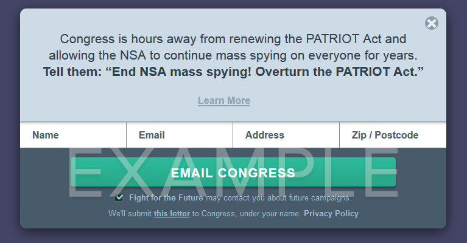

Join a Sunset Vigil — protest mass surveillance!
People are gathering all across the country on Thursday to protest mass surveillance. Find a protest in your area, or contact us to add your event! If you can't attend a protest in-person, join the online protest at www.ifeelnaked.org.
Where do your Senators stand on surveillance?
Should the government be able to spy on the communications of innocent civilians? The courts said no, but this week, the Senate will be voting on reauthorizing the PATRIOT Act, allowing the N.S.A. to continue monitoring the Internet. How will your lawmakers vote? This chart is a work in progress — help us keep it up to date by calling your Senators and reporting back, or learn more about the surveillance bills.
BREAKING: Rand Paul and Ron Wyden to filibuster the Patriot Act!
Senators Paul and Wyden could be civil rights heroes by blocking the
Senate from renewing the PATRIOT Act. Tell them that if they filibuster,
you've got their back.
Tweet Paul
|
Tweet Wyden
| Senator | State | Support PATRIOT Act | Support USA Freedom Act | Contact |
|---|
Call your Senators to ask their position.
Ask your lawmakers to take a stand! The Senate is debating mass surveillance this week. Enter your phone number and we'll connect you to your Senators, one after the other. When you're done with your call, you can report your experience, and we'll use it to update the chart. Learn more about the legislation.
Learn more about the surveillance bills
Each of the bills the Senate is considering would extend N.S.A. mass surveillance in different ways. All of them lack the support of key privacy groups including American Civil Liberties Union, Electronic Frontier Foundation, and Fight for the Future.
• 5 year extension of PATRIOT Act
The N.S.A. has used Section 215 of the PATRIOT Act as its legal justification to target and spy on the communications of hundreds of millions of civilians in the U.S. and abroad, regardless of whether the targets were suspected of any wrongdoing. Section 215 of the PATRIOT Act is set to expire on June 1st, but Senate Majority Leader Mitch McConnell has introduced a bill to reauthorize it until 2020 (S.1035).
In case McConnell's 5-year reauthorization falls through, he has also introduced a short-term bill to extend the PATRIOT Act through July (S.1357).
• The USA Freedom Act
The USA Freedom Act is confusing, because its supporters say it prohibits N.S.A. mass surveillance. While the bill does make some concessions to improve privacy and transparency, these benefits are negated by giveaways to the Intelligence Community that extend existing surveillance programs for years and open up new avenues for even more invasive tracking.
For example, the bill extends Section 215 of the PATRIOT Act until 2019 and expands the type of data the can government access from landline call data to VoIP calls, video chats and smartphone activity. The N.S.A. will still be able to use broad search terms to target large portions of the population, and they can collect even more information from contacts “connected” to those targets. Companies that hand customer data over to the government will be rewarded with blanket immunity from lawsuits, even when they violate their own privacy agreements with customers.
There are many other privacy problems in the USA Freedom Act (too many to list here), but the key takeaway is that this bill is supported by the N.S.A. and opposed by key privacy groups. You can read more about the problems with the bill at www.usafreedom.fail.
How to get involved:
If you care at all about surveillance reform, now is the time to contact your Senator. The Senate will be voting on surveillance policy this week, and this could be our last chance to make our voices heard on these issues for a long time.
Senators Rand Paul and Ron Wyden have vowed to filibuster any reauthorization of the PATRIOT Act. This could be the only hope of killing these surveillance bills. Send them your words of support!
Site owners: get the code.
Add this code to your page to show an action to your visitors. (See demo)
<script type="text/javascript" src="https://fightforthefuture.github.io/usafreedom-widget/widget.min.js"></script>